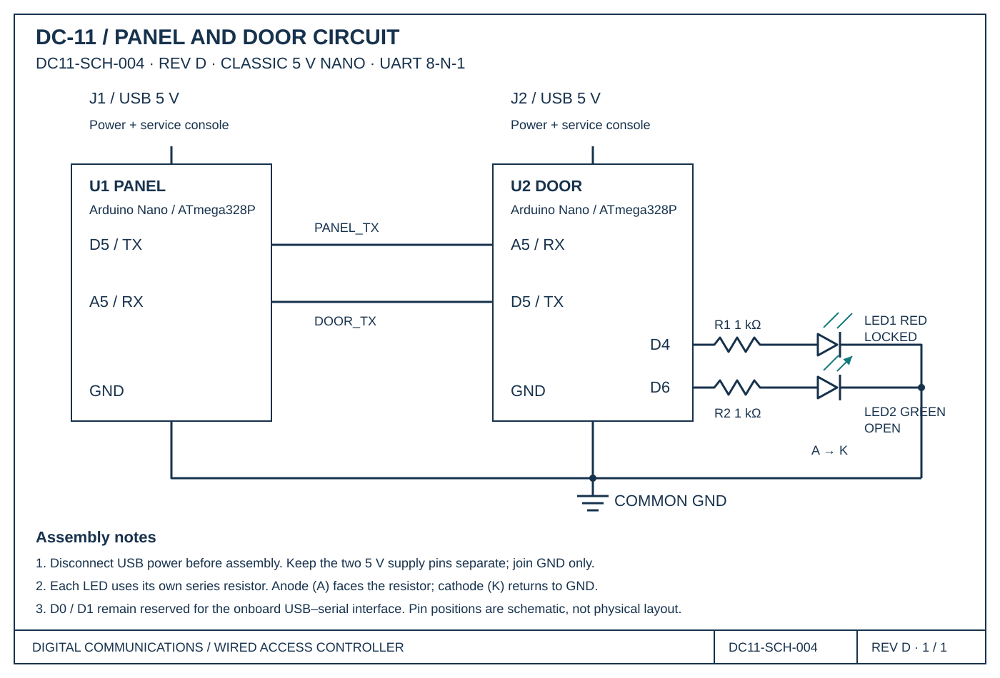

Laboratory
Lab 11 · Week 11 · November 13, 2026
Wired Interception CTF
Measure an isolated UART byte, intercept operating messages and use exposed information to test command acceptance
Learning Outcomes
By the End of This Lab
- Measure a UART signal and infer its baud rate
- Manually decode one byte and recover a complete line with a listener
- Distinguish a transmitted command from receiver acceptance
The Big Picture
What You Are Doing
- Build the panel/door circuit and measure its isolated training byte.
- Use a listening Nano to recover and interpret complete operating traffic.
- Test a modified command and verify the receiver’s console and required LEDs.
Before Lab
Preparation
- Open the lab report and panel/door circuit schematic. Keep each board and its USB console labeled.
Student Resources
Report and Circuit Schematic

Follow These Steps
Lab Walkthrough
Build and Measure — Table 1
- Security Engineering is examining a wired door-control link. First characterize its isolated training byte, then recover operating traffic and determine what the receiver accepts.
- Use the supplied panel/door circuit schematic to build the legitimate system. PANEL D5 (TX) connects to DOOR A5 (RX); DOOR D5 (TX) connects to PANEL A5 (RX). Join their grounds. Power each Nano from its own USB cable; do not join 5 V pins.
- Install both required indicators on DOOR: D4 through a 1 kohm resistor to the red LED anode, cathode to GND; D6 through a separate 1 kohm resistor to the green LED anode, cathode to GND. A5 is the receive pin, not an LED output. Unplug USB power before wiring.
- Open separate Arduino IDE windows for PANEL and DOOR, select their correct ports and open Serial Monitors at 115200 baud with Newline. Label the windows. Opening a monitor can reset its Nano.
- In PANEL’s console enter PATTERN. At startup it already selects this mode. PATTERN sends exactly one start character every second with a long idle interval; no newline or other byte is appended. Determine its value from your capture. This character is a data byte, separate from the UART start bit. DOOR should remain red on and green off.
- Enable scope CH1, select DC coupling and match the probe factor. Start at 1 V/div and 200 microseconds/div. Probe tip goes to PANEL D5 and ground clip to common GND. Use a falling edge trigger on CH1 near 2 V.
- Arm Single acquisition during the quiet HIGH interval. Capture one isolated byte after idle, then zoom and measure adjacent bit intervals. Record actual idle/high/low levels and calculate baud rate as 1 / bit interval. The link uses eight data bits, no parity and one stop bit; data is sent least significant bit first.
Intercept the Traffic — Table 2
- While PANEL is still in PATTERN, manually decode the isolated start character. Mark start, eight data bits and stop. Write data bits in time order, then reconstruct the usual binary number, hexadecimal value and ASCII character. Do not include start or stop in the data value.
- Connect LISTENER by USB in a third IDE window at 115200 baud with Newline. Its wire RX is A5 and TX is D5, like the other boards. This USB monitor speed is separate from the measured wire speed.
- With all USB power unplugged, join LISTENER GND to the common ground and connect LISTENER A5 to the PANEL D5 / DOOR A5 junction. Leave LISTENER D5 disconnected. Restore power; if PANEL reset, confirm PATTERN again.
- In LISTENER’s console enter BAUD followed by your measured candidate rate. HELP lists supported rates. At the matching setting, compare the received start characters with your manual decode.
- In PANEL’s console enter TRAFFIC. This switches from isolated training bytes to complete operating command lines. The transition clears accumulated training text; wait for a complete repeated line beginning with the recovered start character and separated by vertical bars.
- Recover one complete line from LISTENER’s Serial Monitor. You do not manually decode every character on the scope. The frame format is start character | device | action | access code, terminated by a newline. Use the character you recovered, not the words start character. Preserve leading zeros and uppercase actions. Identify each recovered field in Table 2.
- Try another supported BAUD value on LISTENER while PANEL stays in TRAFFIC. Record corrupted or missing text, then restore the measured correct rate and verify complete readable lines return. Leave the USB monitors at 115200 throughout.
Test Command Acceptance — Table 3
- Use the intercepted device and access-code fields to construct an OPEN frame. Retain the recovered start character and vertical-bar separators. The console command is SEND followed by a space and your complete frame; SEND itself is not transmitted on the wire.
- Unplug all USB power. Remove PANEL D5 from the PANEL-to-DOOR signal junction before connecting LISTENER D5 to DOOR A5 instead. LISTENER A5 may remain at that junction. Keep common ground and the DOOR D5-to-PANEL A5 return connection. Never join the PANEL and LISTENER TX outputs.
- Restore power and re-enter the measured BAUD setting on LISTENER. First send an OPEN frame using the recovered device but a deliberately different four-digit code. Record the submitted frame, DOOR rejection and red-on/green-off result. The incorrect-code control must not open the receiver.
- Now send an OPEN frame using the access code recovered from the operating traffic. Watch DOOR’s USB console for acceptance and the flag. Green on and red off indicate OPEN. LISTENER’s Frame sent message alone does not establish acceptance.
- Record the successful frame, flag and both indicator states. Enter RESET in DOOR’s console and verify LOCKED with red on and green off.
- Power off. Disconnect LISTENER D5, restore PANEL D5 to DOOR A5 and power up. PANEL returns to PATTERN after reset; enter TRAFFIC on PANEL to restore normal LOCK command lines. Verify the red/green baseline and repeated readable traffic, then record the restored check.
Finish and Submit
- Complete Tables 1–3, evidence and the conclusion. Each student submits an individual PDF report through Learning Suite.
- Disconnect power before returning wires and boards.
Why This Lab Matters
- Readable commands and reusable access codes can expose control of a device. A CRC does not authenticate the sender.
Submission
- Complete the individual Lab 11 report and submit it as a PDF through Learning Suite.